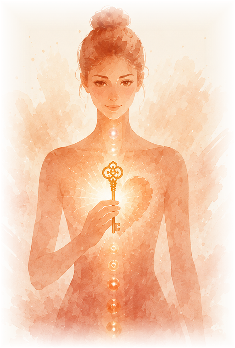

RUNDE 1 · TOR 3
MACHT, OHNMACHT & ICH-KRAFT
Entdecke die Kraft deiner eigenen Mitte
Solarplexus-Chakra | Symbolische Lebensphase 14–21 Jahre
Wie oft stellst du dich selbst zurück, obwohl du ganz genau weißt, was du möchtest?
Vielleicht bist du eine Frau, auf die man sich verlassen kann. Du organisierst, entscheidest, unterstützt und findest selbst dann noch eine Lösung, wenn andere längst aufgegeben haben.
Und manchmal fragst du dich vielleicht, weshalb am Ende so vieles an dir hängen bleibt.
Du möchtest niemanden enttäuschen, keinen Streit verursachen und hältst lieber noch ein bisschen länger durch.
Doch tief in dir gibt es vielleicht eine Stimme, die sagt: Und was ist eigentlich mit mir?
Wann hast du zuletzt eine Entscheidung getroffen, einfach weil sie für dich richtig war?
Wenn dein Körper unter Druck steht
Vielleicht kennst du das Gefühl von Druck im Oberbauch, einen angespannten Rücken oder einen Magen, der in belastenden Situationen empfindlich reagiert.
Gerade unsere Körpermitte kann auf Stress reagieren. Verdauung, Atmung und Muskelspannung stehen in einem engen Austausch mit dem Nervensystem.
Deshalb lohnt es sich manchmal, nicht nur auf die körperlichen Beschwerden zu schauen, sondern auch auf unsere alltäglichen Belastungen.
Wie häufig sagst du Ja, obwohl du eigentlich Nein meinst? Wie oft übernimmst du Aufgaben, die nicht deine sind, oder versuchst, Erwartungen zu erfüllen, die längst nicht mehr zu deinem Leben passen?
Manchmal verwechseln wir Stärke damit, alles allein schaffen zu können.
Dabei kann wirkliche Stärke auch bedeuten, um Unterstützung zu bitten, Grenzen zu setzen und Entscheidungen zu treffen, die unserem eigenen Leben dienen.
In der Chakrenlehre verbinden wir das Solarplexus-Chakra mit Selbstwert, Willenskraft, Eigenständigkeit und unserem bewussten ICH BIN.
Hier geht es um die Frage, ob du deine eigene Kraft wirklich lebst oder sie immer wieder zurückhältst.
Die Wurzeln deiner Geschichte
Gerade in unserer Jugend beginnen wir, unseren eigenen Willen deutlicher zu spüren. Wir möchten selbst entscheiden, Erfahrungen sammeln und unseren Platz im Leben finden.
Doch was geschieht, wenn unsere Meinung wenig zählt? Wenn wir für Fehler kritisiert werden oder lernen, dass Anpassung der sicherere Weg ist?
Vielleicht hast du damals begonnen, besonders viel zu leisten, dich zu beweisen oder deine eigenen Bedürfnisse zurückzustellen.
Daraus können Überzeugungen entstehen wie:
Ich bin nur wertvoll, wenn ich etwas leiste.
Wenn ich Nein sage, werde ich nicht mehr gemocht.
Ich schaffe das lieber allein.
Ich darf keine Schwäche zeigen.
Das dritte Tor verbinden wir symbolisch mit den Lebensjahren zwischen vierzehn und einundzwanzig. Unsere Beziehung zu Macht, Selbstwert und persönlichen Grenzen kann sich jedoch in jedem Alter verändern.
Wo in deinem heutigen Leben gibst du deine Kraft noch ab, obwohl du längst eigene Entscheidungen treffen könntest?
✦ Deine zentrale Frage
„Darf ich für mich einstehen und meine Kraft leben, einfach weil ich wertvoll bin?“
Deine Stärke
Du trägst eine kraftvolle Energie in dir, die dich befähigt, Entscheidungen zu treffen, Herausforderungen anzunehmen und deine Wünsche Wirklichkeit werden zu lassen.
In dir leben Mut, Tatkraft, Entschlossenheit und die Fähigkeit, auch dann weiterzugehen, wenn etwas nicht auf Anhieb gelingt.
Du kannst Verantwortung übernehmen, Lösungen entwickeln und mit deiner Energie vieles bewegen.
Deine besondere Stärke ist deine Fähigkeit, dein Leben aktiv zu gestalten und deinen eigenen Weg zu gehen.
Vielleicht hast du diese Kraft bisher häufig dafür genutzt, Erwartungen zu erfüllen, Aufgaben zu bewältigen oder für andere da zu sein.
Doch diese wunderbare Ich-Kraft darf heute noch bewusster dir selbst zugutekommen.
Du kannst Grenzen setzen, deine Wünsche ernst nehmen und Entscheidungen treffen, die deiner eigenen Wahrheit entsprechen.
Du darfst kraftvoll sein, ohne ständig kämpfen zu brauchen. Und du kannst erfolgreich sein, ohne deinen Wert immer wieder beweisen zu müssen.
In dir lebt die Kraft einer Frau, die ihr Leben selbst gestalten kann. Du darfst ihr vertrauen und sie für das einsetzen, was dich wirklich erfüllt.
Deine Medizin
Wenn du das nächste Mal Ja sagst, obwohl du innerlich Nein empfindest, halte einen Moment inne.
Frage dich:
„Wähle ich das gerade wirklich für mich oder möchte ich verhindern, dass jemand enttäuscht ist?“
Manchmal beginnt ein neuer Umgang mit unserer eigenen Kraft damit, dass wir unsere Entscheidungen bewusster wahrnehmen.
Du darfst deinen eigenen Weg gehen und dabei mit anderen verbunden bleiben.
ICH BIN WERTVOLL. ICH BIN KRAFTVOLL. ICH ENTSCHEIDE MICH FÜR MICH.
Deine Einladung zur Healing Night
Was wäre, wenn du deine innere Kraft nicht länger nur zum Durchhalten, sondern auch zum Gestalten deines Lebens nutzen könntest?
Vielleicht hast du heute bemerkt, wie viel Energie du dafür aufwendest, Erwartungen zu erfüllen oder alles zusammenzuhalten.
Wenn du erforschen möchtest, woher bestimmte Muster kommen und wie du wieder bewusster mit deiner eigenen Kraft in Verbindung treten kannst, lade ich dich in meine kostenfreie Healing Night ein.
In einer liebevoll begleiteten Körper- und Seelenreise bekommst du Raum, deine inneren Ressourcen wahrzunehmen und dir selbst auf einer tieferen Ebene zu begegnen.
Ich freue mich auf dich!
Deine Claudia 🦁
Kostenfreie Healing Night
Sonntag, 17. Januar 2027 | 18:30 Uhr | Online
Zur kostenfreien Healing Night anmelden ›